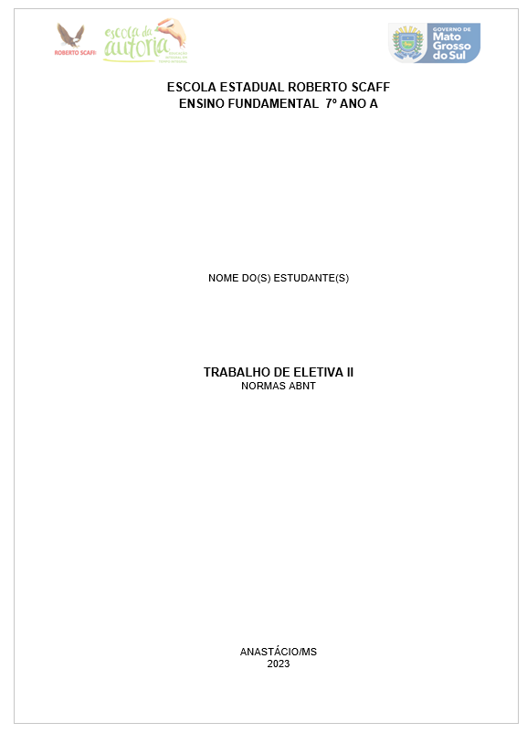
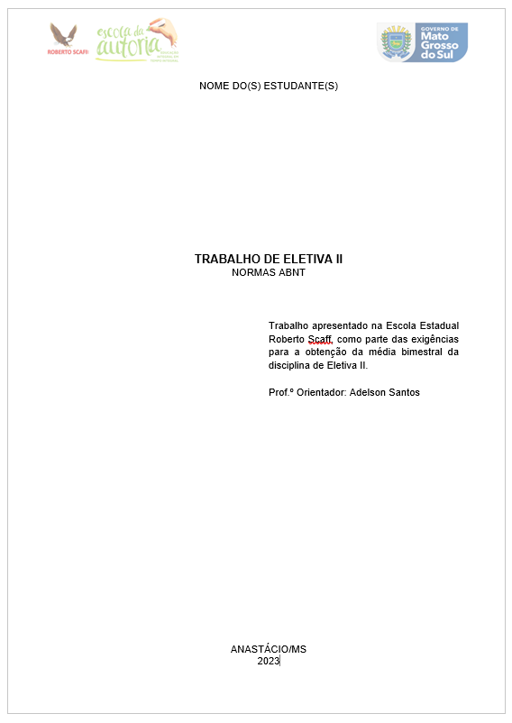
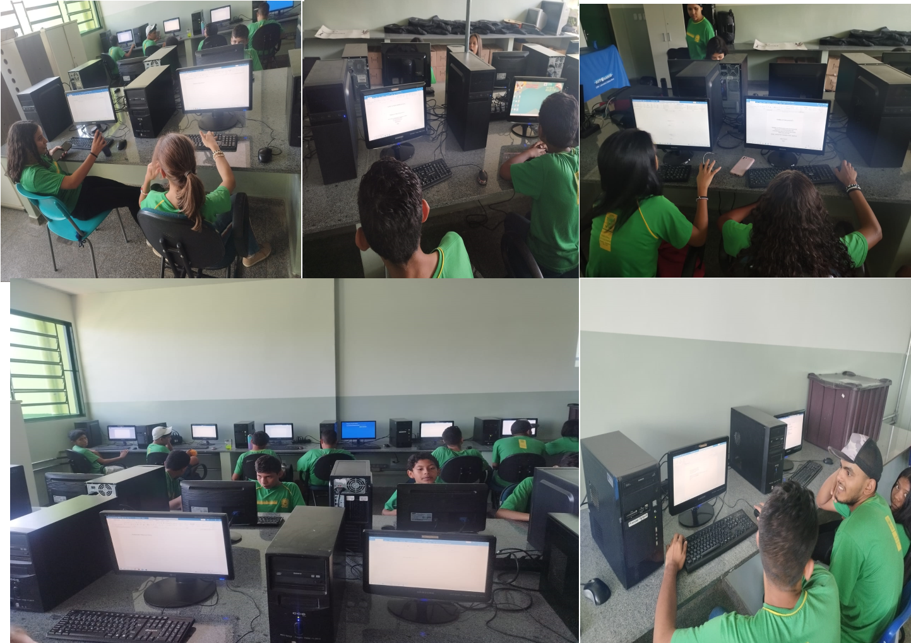

Dica 1: Capa
Utilize fonte Arial ou Times New Roman, tamanho 14, para o título do trabalho. Inclua o nome do autor e título, no final da página adicione o nome da cidade Importante: A margem deve ter 3cm de distância na parte superior e do lado direito da página, e 2cm de distância da parte inferior e do lado esquerdo da página
 Download CapaDica 2: Contra-Capa
Utilize fonte Arial ou Times New Roman, tamanho 14, para o título do trabalho. Inclua o nome do autor e título novamente, escreva uma breve texto sobre o objetivo do trabalho e no final da página adicione o nome da cidade Importante: A margem deve ter 3cm de distância na parte superior e do lado direito da página, e 2cm de distância da parte inferior e do lado esquerdo da página
 Download Contra CapaDica 3: Siga as Normas da ABNT
Sempre consulte as normas atualizadas da ABNT para garantir a conformidade do seu trabalho acadêmico. Esse programa foi elaborada na disciplina de Eletiva II - Introdução a Informática
Download Capa e Contra-Capa 